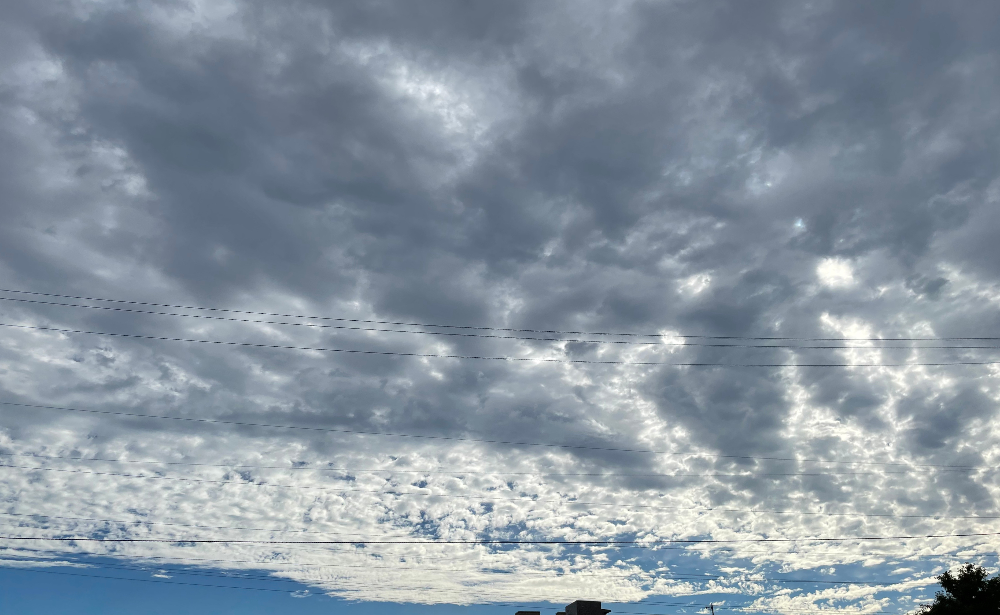

0 Oktas is noah ophoven-baldwin’s second solo release. the music is a collection of live performances, field recordings and other compositions. the pieces are a reflection on walking, working, the “little way”, and love. the music is accompanied by an essay about clouds.
Limited run of 50 booklets with CDs
↵